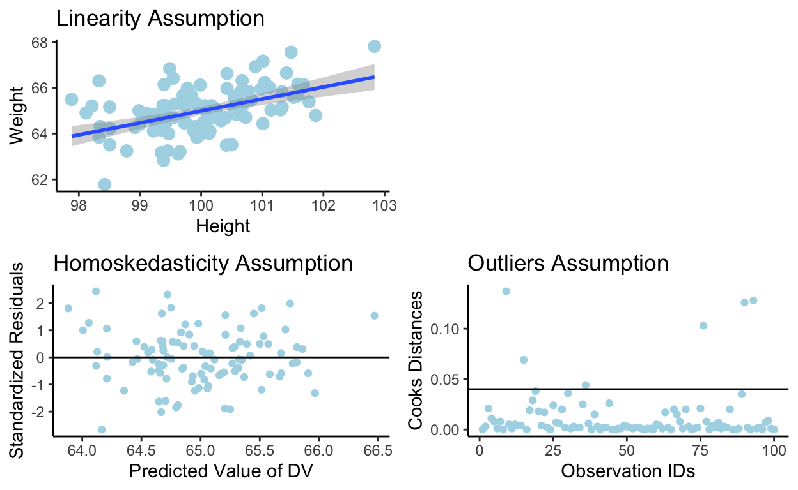

In linear regression analysis, effect sizes provide valuable information about the strength and direction of the relationship between the dependent variable and the independent variables. They quantify the magnitude of the effect of the independent variables on the outcome of interest.
Before we dive into the task of calculating the effect size for our linear models I must remind you of 4 assumptions we rely on for running linear models:
We shall discuss these at the end of this blog so youll need to be patient
One commonly used effect size in linear regression is R-squared (R). This is the effect size that you will find in your R-output when you calculate your linear regression in R (e.g., with the lm(AV ~ UV, data = datensatz))
\(R^2\) represents the proportion of variance in the dependent variable that can be explained by the independent variables in the regression model.
\(R^2\) ranges from 0 to 1, with higher values indicating a stronger relationship between the variables.
\(R^2\) provides an overall measure of the goodness of fit of the regression model and helps assess the amount of variation in the dependent variable that is accounted for by the independent variables.
\(R = \frac{\hat{\sigma_{\mu_{i}}}^2}{\hat{\sigma_{tot}}^2} = QS_{residuen} / QS_{total}\)
The data set:
Height Weight
1 170 60
2 180 75
3 167 59
4 165 88
5 191 91We start with running the model with the (good, old known) unstandardized variables
Call:
lm(formula = dat$Weight ~ dat$Height)
Residuals:
1 2 3 4 5
-11.382 -3.377 -10.284 20.115 4.928
Coefficients:
Estimate Std. Error t value Pr(>|t|)
(Intercept) -47.5307 121.1507 -0.392 0.721
dat$Height 0.6995 0.6928 1.010 0.387
Residual standard error: 15.01 on 3 degrees of freedom
Multiple R-squared: 0.2536, Adjusted R-squared: 0.00482
F-statistic: 1.019 on 1 and 3 DF, p-value: 0.387We continue with computing the confidence interval for the \(\alpha\) and \(\beta\)
confint(lm) 2.5 % 97.5 %
(Intercept) -433.086166 338.024785
dat$Height -1.505342 2.904319y_values <- dat$Weight
y_values[1] 60 75 59 88 91mean_y <- mean(dat$Weight)
mean_y[1] 74.6predicted_y <- predict.lm(lm(dat$Weight ~ dat$Height))
predicted_y 1 2 3 4 5
71.38235 78.37724 69.28389 67.88491 86.07161 qs_res <- (predicted_y - mean_y)**2
qs_res <- sum(qs_res)
qs_tot <- (y_values - mean_y)**2
qs_tot <- sum(qs_tot)
r_squared <- qs_res / qs_tot
r_squared[1] 0.2536148In a simple linear regression, the \(R^2\) provides insight into the proportion of variance in the dependent variable (AV) that can be explained by the independent variable (UV), indicating the models goodness of fit and the strength of the relationship between the variables.
The method relies on the standardized data.
Lets see what changes in the relationship between the AV and the UV if we scale both (spoiler: absolutely nothing.):
A standardized beta allows for a direct comparison of the relative importance of different predictor variables within a regression model. Since both the predictor and criterion variables are standardized, the magnitude of the standardized beta represents the change in the criterion variable in terms of standard deviations when the predictor variable changes by one standard deviation.
Unit Independence: The standardized beta is not influenced by the specific units of measurement used for the predictor and criterion variables. This makes it easier to compare the effects of different variables, even if they are measured on different scales or have different units.
Generalizability: The effect size (\(\beta_{z}\)) represents the magnitude of the relationship between the predictor and criterion variables in standardized units. This allows for better generalizability across different samples, populations, or studies, as it is not dependent on the specific measurement units used.
Comparability: Standardized betas and effect sizes can be compared across different studies or analyses, providing a standardized measure of the strength of the relationships. This comparability facilitates meta-analyses or synthesis of results from multiple studies.
\[cov(x,y) = \frac{\sum{(x_{i}-\hat{x})\times (y_{i}-\hat{y})}}{n-1}\]
cov <- sum((scale.default(dat$Height) - scale_mean_x) * (scale(dat$Weight) - scaled_mean_y))
cov <- cov/3
cov[1] 0.6714691\[var(x) = \frac{\sum{(x_{i}-\hat{x})^2}}{n-1}\]
beta_z <- cov/var_x
beta_z[1] 0.5036018
Call:
lm(formula = scale(dat$Weight) ~ scale(dat$Height))
Residuals:
1 2 3 4 5
-0.7566 -0.2245 -0.6836 1.3371 0.3276
attr(,"scaled:center")
[1] 74.6
attr(,"scaled:scale")
[1] 15.04
Coefficients:
Estimate Std. Error t value Pr(>|t|)
(Intercept) 3.536e-17 4.461e-01 0.00 1.000
scale(dat$Height) 5.036e-01 4.988e-01 1.01 0.387
Residual standard error: 0.9976 on 3 degrees of freedom
Multiple R-squared: 0.2536, Adjusted R-squared: 0.00482
F-statistic: 1.019 on 1 and 3 DF, p-value: 0.387confint(lm_z) 2.5 % 97.5 %
(Intercept) -1.419799 1.419799
scale(dat$Height) -1.083782 2.090986We know that since we have collected only 5 observations, this experiment might suffer from low power We even have a good reason to believe so because the relationship between height and weight may hold in reality
We can determine the sample size we will need to achieve significant results
BUT Careful! this method is no magic! we will only be likely to obtain significant results only if there is, indeed, a relationship between height and weight)
We have to first calculate therho_squared = coef(lm_z)["scale(dat$Height)"]^2
f_squared = rho_squared/(1-rho_squared)
f_squaredscale(dat$Height)
0.3397908 We use the power calculation function pwr.f2.test(). It takes the following arguments: \(u\) which is the number of predictors we have in our model. In a simple linear regression we always ahve only 1, \(f2\) which is the effect size, f squared, which we calculated above. The other arguments are \(sig.level\) that determines the significance level (Type I error probability) and \(power\) represents the power we wish to achieve (1 minus Type II error probability)
library(pwr)
pwr.f2.test(u = 1, f2 = f_squared, sig.level = 0.005, power = 0.8)
Multiple regression power calculation
u = 1
v = 41.23813
f2 = 0.3397908
sig.level = 0.005
power = 0.8Interpretation: Because = 2 (we estimate 2 variables), we must add those 2 to know what the required sample (i.e., + 2). In our case, we will need 43 subjects (41. + ).
Ranges between 0 and 1.
1.1) A value closer to 1 indicates a stronger relationship between the independent (UV) and dependent (AV) variables, meaning that more of the variance in the dependent variable can be explained by the independent variable(s).
1.2) Conversely, a value closer to 0 indicates a weaker relationship.
The estimated value \(r^2\) (which is the realised value of \(R^2\)) within the scope of the SLR (simple linear regression) is equivalent to the squared Pearson correlation.
\(r^2\) is also referred to as the coefficient of determination.
Interpretation of the standardized \(\beta_{z}\): If the predictor variable (AV) increases by one standard deviation, the criterion variable (UV), on average, increases by \(\beta_{z}\) standard deviations.
Call:
lm(formula = Weight ~ Height, data = dat_rich)
Residuals:
Min 1Q Median 3Q Max
-2.83157 -0.51590 0.04761 0.56409 1.73001
Coefficients:
Estimate Std. Error t value Pr(>|t|)
(Intercept) -12.84787 7.40807 -1.734 0.086 .
Height 0.77810 0.07399 10.516 <2e-16 ***
---
Signif. codes: 0 '***' 0.001 '**' 0.01 '*' 0.05 '.' 0.1 ' ' 1
Residual standard error: 0.7983 on 98 degrees of freedom
Multiple R-squared: 0.5302, Adjusted R-squared: 0.5254
F-statistic: 110.6 on 1 and 98 DF, p-value: < 2.2e-16library(ggplot2)
library(gridExtra)
stand_res <- as.data.frame(rstandard(lm_2))
p_1 <- ggplot(data = dat_rich, aes(x = Height, y = Weight)) +
geom_point(col = "lightblue", size = 3) +
geom_smooth(method = "lm", ) +
ggtitle("Linearity Assumption")+
theme_classic()
predicted <- as.data.frame(predict(lm_2, interval = "prediction", level = .95))
predicted$stand_res <- stand_res$`rstandard(lm_2)`
p_2 <- ggplot(data = predicted, aes(fit, stand_res))+
geom_point(col = "lightblue")+
ggtitle("Homoskedasticity Assumption") +
geom_hline(yintercept = 0) +
xlab("Predicted Value of DV") +
ylab("Standardized Residuals") +
theme_classic()
cook_dat <- as.data.frame(round(cooks.distance(lm_2), digits = 3))
cook_dat$id <- cbind(1:sample_size)
p_3 <- ggplot(data = cook_dat, aes(x = id, y = `round(cooks.distance(lm_2), digits = 3)`))+
geom_point(col = "lightblue")+
ggtitle("Outliers Assumption") +
geom_hline(yintercept = 0.04) +
xlab("Observation IDs") +
ylab("Cooks Distances") +
theme_classic()
# Arrange the plots in a grid
combined_plots <- grid.arrange(p_1, p_2, p_3, layout_matrix = rbind(c(1, NA), c(2, 3)),
heights = c(3,3), widths = c(5, 5))
Cooks D(i) = \(\frac{{\Delta \hat{y_i}^2}}{{p}} \times \frac{{h_{ii}}}{{(1 - h_{ii})}}\)
scaled_dat_rich <- as.data.frame(round(scale(dat_rich), digits = 2))
lm_z_2 <- lm(scaled_dat_rich$Weight ~scaled_dat_rich$Height)
summary(lm_z_2)
Call:
lm(formula = scaled_dat_rich$Weight ~ scaled_dat_rich$Height)
Residuals:
Min 1Q Median 3Q Max
-2.44763 -0.44196 0.04138 0.48375 1.48945
Coefficients:
Estimate Std. Error t value Pr(>|t|)
(Intercept) 0.0003455 0.0688949 0.005 0.996
scaled_dat_rich$Height 0.7276448 0.0692322 10.510 <2e-16 ***
---
Signif. codes: 0 '***' 0.001 '**' 0.01 '*' 0.05 '.' 0.1 ' ' 1
Residual standard error: 0.6889 on 98 degrees of freedom
Multiple R-squared: 0.5299, Adjusted R-squared: 0.5251
F-statistic: 110.5 on 1 and 98 DF, p-value: < 2.2e-16confint.lm(lm_z_2) 2.5 % 97.5 %
(Intercept) -0.1363741 0.1370652
scaled_dat_rich$Height 0.5902558 0.8650338